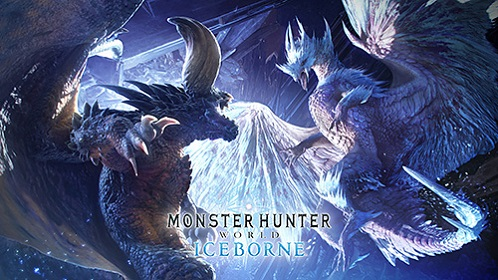
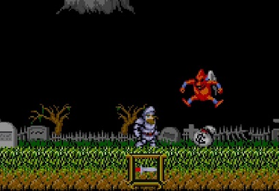

知らない人はいないであろうモンスターハンターです。私はモンハンから友人関係が増えていったということもあり、かなり印象強いゲームです。自分のプレイスキル次第でどんな強敵にも勝つことが出来るので、何かにのめり込みたい！という時には是非遊んでみてください。もうすぐ新作もSwihchで発売されるので楽しみです。

このゲームを知っている人は少ないんじゃないでしょうか。伝説のアクションゲーム、「魔界村」です。強烈な難易度ということもあり、かなりのプレイヤーを苦しめたゲームです。
簡単に例えると、敵がとてつもなく強くなったスーパーマリオブラザーズ。
クリアまでいけたらあなたは立派なゲーマーになっていることでしょう。
ちなみに続編もいくつかあります。